<!doctype html>
<html lang="en">
    <head>
        <meta charset="utf-8">
        <meta http-equiv="X-UA-Compatible" content="IE=edge">
        <meta name="viewport" content="initial-scale=1,user-scalable=no,maximum-scale=1,width=device-width">
        <meta name="mobile-web-app-capable" content="yes">
        <meta name="apple-mobile-web-app-capable" content="yes">
        <link rel="stylesheet" href="css/leaflet.css">
        <link rel="stylesheet" href="css/qgis2web.css"><link rel="stylesheet" href="css/fontawesome-all.min.css">
        <style>
        html, body, #map {
            width: 100%;
            height: 100%;
            padding: 0;
            margin: 0;
        }
        </style>
        <title></title>
    </head>
    <body>
        <div id="map">
        </div>
        <script src="js/qgis2web_expressions.js"></script>
        <script src="js/leaflet.js"></script>
        <script src="js/leaflet.rotatedMarker.js"></script>
        <script src="js/leaflet.pattern.js"></script>
        <script src="js/leaflet-hash.js"></script>
        <script src="js/Autolinker.min.js"></script>
        <script src="js/rbush.min.js"></script>
        <script src="js/labelgun.min.js"></script>
        <script src="js/labels.js"></script>
        <script src="data/centlocal11181_2.js"></script>
        <script src="data/aeisintambiental11181_3.js"></script>
        <script src="data/opurb11181_4.js"></script>
        <script src="data/quadrasctom_5.js"></script>
        <script src="data/projviarioprior11181_6.js"></script>
        <script src="data/adeintambiental11181_7.js"></script>
        <script src="data/Regiaoizidoro_8.js"></script>
        <script>
        var map = L.map('map', {
            zoomControl:true, maxZoom:28, minZoom:1
        }).fitBounds([[-19.821160951064765,-43.93550886316072],[-19.79318566373833,-43.8740883910994]]);
        var hash = new L.Hash(map);
        map.attributionControl.setPrefix('<a href="https://github.com/tomchadwin/qgis2web" target="_blank">qgis2web</a> &middot; <a href="https://leafletjs.com" title="A JS library for interactive maps">Leaflet</a> &middot; <a href="https://qgis.org">QGIS</a>');
        var autolinker = new Autolinker({truncate: {length: 30, location: 'smart'}});
        var bounds_group = new L.featureGroup([]);
        function setBounds() {
        }
        map.createPane('pane_GoogleSatellite_0');
        map.getPane('pane_GoogleSatellite_0').style.zIndex = 400;
        var layer_GoogleSatellite_0 = L.tileLayer('https://mt1.google.com/vt/lyrs=s&x={x}&y={y}&z={z}', {
            pane: 'pane_GoogleSatellite_0',
            opacity: 1.0,
            attribution: '<a href="https://www.google.at/permissions/geoguidelines/attr-guide.html">Map data ©2015 Google</a>',
            minZoom: 1,
            maxZoom: 28,
            minNativeZoom: 0,
            maxNativeZoom: 20
        });
        layer_GoogleSatellite_0;
        map.addLayer(layer_GoogleSatellite_0);
        var img_NDVILOCAL_1 = 'data/NDVILOCAL_1.png';
        var img_bounds_NDVILOCAL_1 = [[-19.8538908776666,-43.950656309038436],[-19.791663477057828,-43.880063707669365]];
        var layer_NDVILOCAL_1 = new L.imageOverlay(img_NDVILOCAL_1, img_bounds_NDVILOCAL_1);
        bounds_group.addLayer(layer_NDVILOCAL_1);
        map.addLayer(layer_NDVILOCAL_1);
        function pop_centlocal11181_2(feature, layer) {
            var popupContent = '<table>\
                    <tr>\
                        <td colspan="2">' + (feature.properties['ID_CENTRAL'] !== null ? autolinker.link(feature.properties['ID_CENTRAL'].toLocaleString()) : '') + '</td>\
                    </tr>\
                    <tr>\
                        <td colspan="2">' + (feature.properties['NOME_LOGRA'] !== null ? autolinker.link(feature.properties['NOME_LOGRA'].toLocaleString()) : '') + '</td>\
                    </tr>\
                </table>';
            layer.bindPopup(popupContent, {maxHeight: 400});
        }

        function style_centlocal11181_2_0() {
            return {
                pane: 'pane_centlocal11181_2',
                opacity: 1,
                color: 'rgba(35,35,35,0.0)',
                dashArray: '',
                lineCap: 'butt',
                lineJoin: 'miter',
                weight: 1.0, 
                fill: true,
                fillOpacity: 1,
                fillColor: 'rgba(255,56,7,1.0)',
                interactive: true,
            }
        }
        map.createPane('pane_centlocal11181_2');
        map.getPane('pane_centlocal11181_2').style.zIndex = 402;
        map.getPane('pane_centlocal11181_2').style['mix-blend-mode'] = 'normal';
        var layer_centlocal11181_2 = new L.geoJson(json_centlocal11181_2, {
            attribution: '',
            interactive: true,
            dataVar: 'json_centlocal11181_2',
            layerName: 'layer_centlocal11181_2',
            pane: 'pane_centlocal11181_2',
            onEachFeature: pop_centlocal11181_2,
            style: style_centlocal11181_2_0,
        });
        bounds_group.addLayer(layer_centlocal11181_2);
        map.addLayer(layer_centlocal11181_2);
        function pop_aeisintambiental11181_3(feature, layer) {
            var popupContent = '<table>\
                    <tr>\
                        <td colspan="2">' + (feature.properties['ID_AEIS_IN'] !== null ? autolinker.link(feature.properties['ID_AEIS_IN'].toLocaleString()) : '') + '</td>\
                    </tr>\
                    <tr>\
                        <td colspan="2">' + (feature.properties['NOME_AEIS_'] !== null ? autolinker.link(feature.properties['NOME_AEIS_'].toLocaleString()) : '') + '</td>\
                    </tr>\
                </table>';
            layer.bindPopup(popupContent, {maxHeight: 400});
        }

        function style_aeisintambiental11181_3_0() {
            return {
                pane: 'pane_aeisintambiental11181_3',
                opacity: 1,
                color: 'rgba(206,0,196,1.0)',
                dashArray: '',
                lineCap: 'butt',
                lineJoin: 'miter',
                weight: 3.0, 
                fill: true,
                fillOpacity: 1,
                fillColor: 'rgba(190,178,151,0.0)',
                interactive: true,
            }
        }
        map.createPane('pane_aeisintambiental11181_3');
        map.getPane('pane_aeisintambiental11181_3').style.zIndex = 403;
        map.getPane('pane_aeisintambiental11181_3').style['mix-blend-mode'] = 'normal';
        var layer_aeisintambiental11181_3 = new L.geoJson(json_aeisintambiental11181_3, {
            attribution: '',
            interactive: true,
            dataVar: 'json_aeisintambiental11181_3',
            layerName: 'layer_aeisintambiental11181_3',
            pane: 'pane_aeisintambiental11181_3',
            onEachFeature: pop_aeisintambiental11181_3,
            style: style_aeisintambiental11181_3_0,
        });
        bounds_group.addLayer(layer_aeisintambiental11181_3);
        map.addLayer(layer_aeisintambiental11181_3);
        function pop_opurb11181_4(feature, layer) {
            var popupContent = '<table>\
                    <tr>\
                        <td colspan="2">' + (feature.properties['ID_OPERACA'] !== null ? autolinker.link(feature.properties['ID_OPERACA'].toLocaleString()) : '') + '</td>\
                    </tr>\
                    <tr>\
                        <td colspan="2">' + (feature.properties['TIPO'] !== null ? autolinker.link(feature.properties['TIPO'].toLocaleString()) : '') + '</td>\
                    </tr>\
                    <tr>\
                        <td colspan="2">' + (feature.properties['NOME'] !== null ? autolinker.link(feature.properties['NOME'].toLocaleString()) : '') + '</td>\
                    </tr>\
                    <tr>\
                        <td colspan="2">' + (feature.properties['SITUACAO'] !== null ? autolinker.link(feature.properties['SITUACAO'].toLocaleString()) : '') + '</td>\
                    </tr>\
                    <tr>\
                        <td colspan="2">' + (feature.properties['VALIDADE'] !== null ? autolinker.link(feature.properties['VALIDADE'].toLocaleString()) : '') + '</td>\
                    </tr>\
                    <tr>\
                        <td colspan="2">' + (feature.properties['SUBDIVISAO'] !== null ? autolinker.link(feature.properties['SUBDIVISAO'].toLocaleString()) : '') + '</td>\
                    </tr>\
                </table>';
            layer.bindPopup(popupContent, {maxHeight: 400});
        }

        function style_opurb11181_4_0() {
            return {
                pane: 'pane_opurb11181_4',
                opacity: 1,
                color: 'rgba(255,141,1,1.0)',
                dashArray: '10,5',
                lineCap: 'butt',
                lineJoin: 'miter',
                weight: 2.0, 
                fill: true,
                fillOpacity: 1,
                fillColor: 'rgba(255,238,1,0.0)',
                interactive: true,
            }
        }
        map.createPane('pane_opurb11181_4');
        map.getPane('pane_opurb11181_4').style.zIndex = 404;
        map.getPane('pane_opurb11181_4').style['mix-blend-mode'] = 'normal';
        var layer_opurb11181_4 = new L.geoJson(json_opurb11181_4, {
            attribution: '',
            interactive: true,
            dataVar: 'json_opurb11181_4',
            layerName: 'layer_opurb11181_4',
            pane: 'pane_opurb11181_4',
            onEachFeature: pop_opurb11181_4,
            style: style_opurb11181_4_0,
        });
        bounds_group.addLayer(layer_opurb11181_4);
        map.addLayer(layer_opurb11181_4);
        function pop_quadrasctom_5(feature, layer) {
            var popupContent = '<table>\
                    <tr>\
                        <td colspan="2">' + (feature.properties['ID_QDR'] !== null ? autolinker.link(feature.properties['ID_QDR'].toLocaleString()) : '') + '</td>\
                    </tr>\
                    <tr>\
                        <td colspan="2">' + (feature.properties['CODIGO'] !== null ? autolinker.link(feature.properties['CODIGO'].toLocaleString()) : '') + '</td>\
                    </tr>\
                </table>';
            layer.bindPopup(popupContent, {maxHeight: 400});
        }

        function style_quadrasctom_5_0() {
            return {
                pane: 'pane_quadrasctom_5',
                opacity: 1,
                color: 'rgba(35,35,35,1.0)',
                dashArray: '',
                lineCap: 'butt',
                lineJoin: 'miter',
                weight: 1.0, 
                fill: true,
                fillOpacity: 1,
                fillColor: 'rgba(114,155,111,0.0)',
                interactive: true,
            }
        }
        map.createPane('pane_quadrasctom_5');
        map.getPane('pane_quadrasctom_5').style.zIndex = 405;
        map.getPane('pane_quadrasctom_5').style['mix-blend-mode'] = 'normal';
        var layer_quadrasctom_5 = new L.geoJson(json_quadrasctom_5, {
            attribution: '',
            interactive: true,
            dataVar: 'json_quadrasctom_5',
            layerName: 'layer_quadrasctom_5',
            pane: 'pane_quadrasctom_5',
            onEachFeature: pop_quadrasctom_5,
            style: style_quadrasctom_5_0,
        });
        bounds_group.addLayer(layer_quadrasctom_5);
        map.addLayer(layer_quadrasctom_5);
        function pop_projviarioprior11181_6(feature, layer) {
            var popupContent = '<table>\
                    <tr>\
                        <td colspan="2">' + (feature.properties['NOME_VIURB'] !== null ? autolinker.link(feature.properties['NOME_VIURB'].toLocaleString()) : '') + '</td>\
                    </tr>\
                    <tr>\
                        <td colspan="2">' + (feature.properties['ID_PROJ_VI'] !== null ? autolinker.link(feature.properties['ID_PROJ_VI'].toLocaleString()) : '') + '</td>\
                    </tr>\
                </table>';
            layer.bindPopup(popupContent, {maxHeight: 400});
        }

        function style_projviarioprior11181_6_0() {
            return {
                pane: 'pane_projviarioprior11181_6',
                opacity: 1,
                color: 'rgba(254,0,89,1.0)',
                dashArray: '1,5',
                lineCap: 'butt',
                lineJoin: 'miter',
                weight: 3.0, 
                fill: true,
                fillOpacity: 1,
                fillColor: 'rgba(225,89,137,0.0)',
                interactive: true,
            }
        }
        map.createPane('pane_projviarioprior11181_6');
        map.getPane('pane_projviarioprior11181_6').style.zIndex = 406;
        map.getPane('pane_projviarioprior11181_6').style['mix-blend-mode'] = 'normal';
        var layer_projviarioprior11181_6 = new L.geoJson(json_projviarioprior11181_6, {
            attribution: '',
            interactive: true,
            dataVar: 'json_projviarioprior11181_6',
            layerName: 'layer_projviarioprior11181_6',
            pane: 'pane_projviarioprior11181_6',
            onEachFeature: pop_projviarioprior11181_6,
            style: style_projviarioprior11181_6_0,
        });
        bounds_group.addLayer(layer_projviarioprior11181_6);
        map.addLayer(layer_projviarioprior11181_6);
        function pop_adeintambiental11181_7(feature, layer) {
            var popupContent = '<table>\
                    <tr>\
                        <td colspan="2">' + (feature.properties['ID_ADE_INT'] !== null ? autolinker.link(feature.properties['ID_ADE_INT'].toLocaleString()) : '') + '</td>\
                    </tr>\
                    <tr>\
                        <td colspan="2">' + (feature.properties['NOME_TIPO_'] !== null ? autolinker.link(feature.properties['NOME_TIPO_'].toLocaleString()) : '') + '</td>\
                    </tr>\
                </table>';
            layer.bindPopup(popupContent, {maxHeight: 400});
        }

        function style_adeintambiental11181_7_0() {
            return {
                pane: 'pane_adeintambiental11181_7',
                opacity: 1,
                color: 'rgba(90,255,1,1.0)',
                dashArray: '10,5',
                lineCap: 'butt',
                lineJoin: 'miter',
                weight: 3.0, 
                fill: true,
                fillOpacity: 1,
                fillColor: 'rgba(114,155,111,0.0)',
                interactive: true,
            }
        }
        map.createPane('pane_adeintambiental11181_7');
        map.getPane('pane_adeintambiental11181_7').style.zIndex = 407;
        map.getPane('pane_adeintambiental11181_7').style['mix-blend-mode'] = 'normal';
        var layer_adeintambiental11181_7 = new L.geoJson(json_adeintambiental11181_7, {
            attribution: '',
            interactive: true,
            dataVar: 'json_adeintambiental11181_7',
            layerName: 'layer_adeintambiental11181_7',
            pane: 'pane_adeintambiental11181_7',
            onEachFeature: pop_adeintambiental11181_7,
            style: style_adeintambiental11181_7_0,
        });
        bounds_group.addLayer(layer_adeintambiental11181_7);
        map.addLayer(layer_adeintambiental11181_7);
        function pop_Regiaoizidoro_8(feature, layer) {
            var popupContent = '<table>\
                    <tr>\
                        <td colspan="2">' + (feature.properties['Name'] !== null ? autolinker.link(feature.properties['Name'].toLocaleString()) : '') + '</td>\
                    </tr>\
                    <tr>\
                        <td colspan="2">' + (feature.properties['descriptio'] !== null ? autolinker.link(feature.properties['descriptio'].toLocaleString()) : '') + '</td>\
                    </tr>\
                    <tr>\
                        <td colspan="2">' + (feature.properties['timestamp'] !== null ? autolinker.link(feature.properties['timestamp'].toLocaleString()) : '') + '</td>\
                    </tr>\
                    <tr>\
                        <td colspan="2">' + (feature.properties['begin'] !== null ? autolinker.link(feature.properties['begin'].toLocaleString()) : '') + '</td>\
                    </tr>\
                    <tr>\
                        <td colspan="2">' + (feature.properties['end'] !== null ? autolinker.link(feature.properties['end'].toLocaleString()) : '') + '</td>\
                    </tr>\
                    <tr>\
                        <td colspan="2">' + (feature.properties['altitudeMo'] !== null ? autolinker.link(feature.properties['altitudeMo'].toLocaleString()) : '') + '</td>\
                    </tr>\
                    <tr>\
                        <td colspan="2">' + (feature.properties['tessellate'] !== null ? autolinker.link(feature.properties['tessellate'].toLocaleString()) : '') + '</td>\
                    </tr>\
                    <tr>\
                        <td colspan="2">' + (feature.properties['extrude'] !== null ? autolinker.link(feature.properties['extrude'].toLocaleString()) : '') + '</td>\
                    </tr>\
                    <tr>\
                        <td colspan="2">' + (feature.properties['visibility'] !== null ? autolinker.link(feature.properties['visibility'].toLocaleString()) : '') + '</td>\
                    </tr>\
                    <tr>\
                        <td colspan="2">' + (feature.properties['drawOrder'] !== null ? autolinker.link(feature.properties['drawOrder'].toLocaleString()) : '') + '</td>\
                    </tr>\
                    <tr>\
                        <td colspan="2">' + (feature.properties['icon'] !== null ? autolinker.link(feature.properties['icon'].toLocaleString()) : '') + '</td>\
                    </tr>\
                    <tr>\
                        <td colspan="2">' + (feature.properties['snippet'] !== null ? autolinker.link(feature.properties['snippet'].toLocaleString()) : '') + '</td>\
                    </tr>\
                </table>';
            layer.bindPopup(popupContent, {maxHeight: 400});
        }

        function style_Regiaoizidoro_8_0() {
            return {
                pane: 'pane_Regiaoizidoro_8',
                opacity: 1,
                color: 'rgba(255,255,255,1.0)',
                dashArray: '1,5',
                lineCap: 'butt',
                lineJoin: 'miter',
                weight: 3.0, 
                fill: true,
                fillOpacity: 1,
                fillColor: 'rgba(190,178,151,0.0)',
                interactive: true,
            }
        }
        map.createPane('pane_Regiaoizidoro_8');
        map.getPane('pane_Regiaoizidoro_8').style.zIndex = 408;
        map.getPane('pane_Regiaoizidoro_8').style['mix-blend-mode'] = 'normal';
        var layer_Regiaoizidoro_8 = new L.geoJson(json_Regiaoizidoro_8, {
            attribution: '',
            interactive: true,
            dataVar: 'json_Regiaoizidoro_8',
            layerName: 'layer_Regiaoizidoro_8',
            pane: 'pane_Regiaoizidoro_8',
            onEachFeature: pop_Regiaoizidoro_8,
            style: style_Regiaoizidoro_8_0,
        });
        bounds_group.addLayer(layer_Regiaoizidoro_8);
        map.addLayer(layer_Regiaoizidoro_8);
        var baseMaps = {};
        L.control.layers(baseMaps,{' Regiao izidoro': layer_Regiaoizidoro_8,' ade int ambiental - 11181': layer_adeintambiental11181_7,' proj viario prior 11181': layer_projviarioprior11181_6,' quadras-ctom': layer_quadrasctom_5,' op urb 11181': layer_opurb11181_4,' aeis int ambiental 11181': layer_aeisintambiental11181_3,' cent local 11181': layer_centlocal11181_2,"NDVI LOCAL": layer_NDVILOCAL_1,"Google Satellite": layer_GoogleSatellite_0,}).addTo(map);
        setBounds();
        L.ImageOverlay.include({
            getBounds: function () {
                return this._bounds;
            }
        });
        </script>
    </body>
</html>
